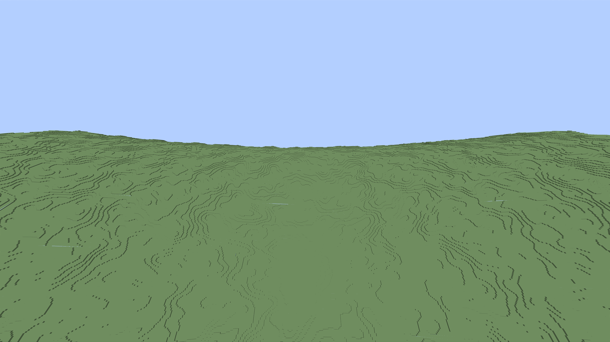
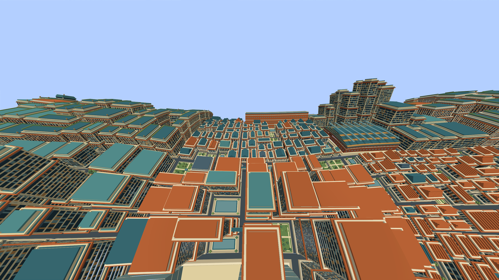
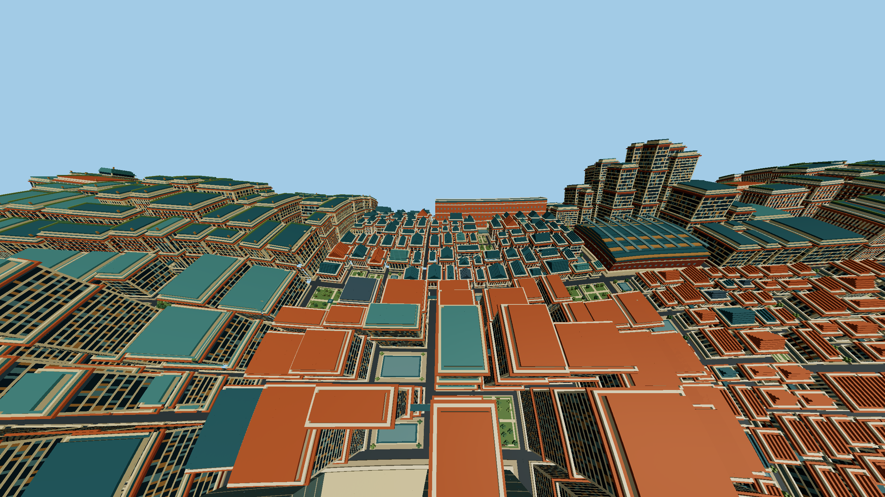
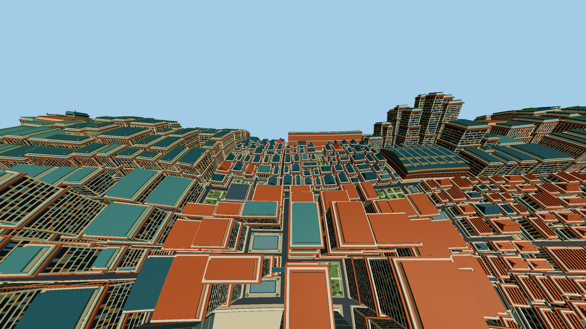
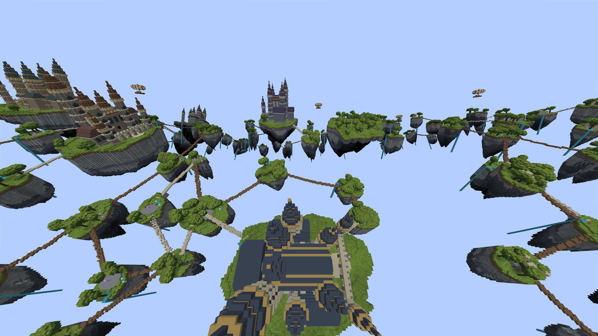
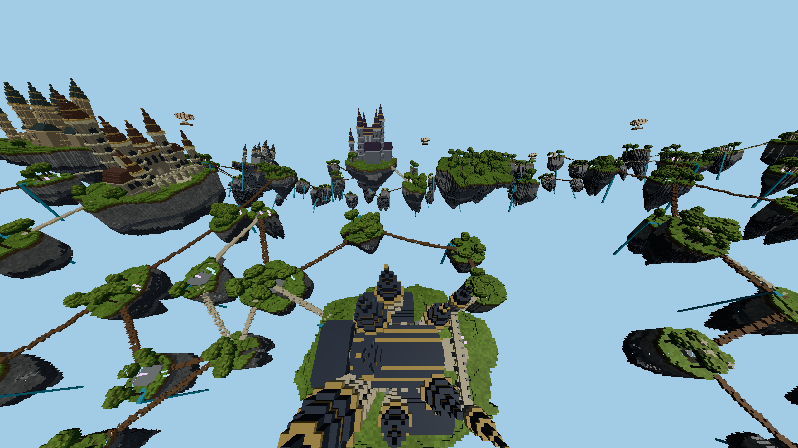

MATCHED APPLICATION STRESS TEST · 28 OCTOBER 2026
Firefox and Minecraft,
under the same terrain stress.
Key findings · Frame performance · Firefox costs · Image comparison
Common load: 2560 × 1440 actual rendered pixels, no MSAA, one-metre detail throughout the same eight original terrain zones, 8-chunk near radius and 576-chunk far radius. Fog is off. DH requires 512 fully uploaded detail-0 sections with PIXEL_ART vertical quality; Space requires all eight finest sources and a fixed 1 m mip. This is a bounded 6.25% world fixture, not a full-world maximum-load claim.
Ordinary view uses 70° vertical FOV and 18° downward pitch. Dense view uses 100° and 55° to put more terrain on screen. Turning sweeps ±90° over a 6 s cycle. Translation follows a 64 m × 32 m oscillating route over the same period. The actual projection matrix is checked. Each case runs twice in forward/reverse order, with 6 s warmup and 12 s measurement per block, after 60 s steady warmup. Native and Firefox run sequentially.
Interpretation: these are whole-application frame intervals. Native FPS is uncapped; Firefox presentation is refresh-limited. Lighting, reconstruction, native gameplay overhead and browser overhead remain different. A ratio here is not an isolated rendering-algorithm speedup. Moving frames include near-terrain streaming; initial world preparation and screenshot saving are excluded, but long timed frames are retained.
What the stress cases expose
The strongest practical separation appears during translation. The table below reports whole-application results; browser limits and remaining image differences prevent interpreting the ratio as a pure algorithm speedup. Compare dense/turn/move CPU and GPU spans below before attributing the loss to triangle processing.
Quality finding: Space's wide Nature capture shows visible gaps along the near/far boundary even after settling; the native counterpart does not show those gaps. One-metre source cells therefore do not establish equal final image quality. These are current-renderer stress results, not a strict equal-quality victory for either algorithm. The screenshots preserve the defect instead of concealing it.
Prioritize near/far coverage correctness, then measure moving terrain preparation, publication and command submission separately. The coverage shader currently quantizes chunk coordinates before interpolation; this is a concrete candidate for investigating the boundary gaps, not a confirmed diagnosis from timing data. No production renderer defaults were changed by this stress follow-up.
FPS cells show the pooled result, with the two block results below. Paired columns are Minecraft / Firefox. P95 is the 95th-percentile frame interval. “1% low” is 1000 divided by the mean of the slowest 1% frame intervals. The two repetitions describe variability, not statistical confidence intervals.
Firefox: where the frame goes
Render and distant-update CPU spans are parts of the full CPU callback, not additional costs to add. GPU spans are asynchronous WebGPU pass envelopes; native GPU time is not instrumented. CPU and GPU overlap. Firefox's timer precision limits small subspan interpretation. Near-not-ready and far-pending percentages report the frames observing those states, not missing-pixel percentages.
Inspect common detail and coverage
Motion captures freeze the camera at the shared phase 0 outside timed samples. They compare framing and detail at that pose; they do not establish pixel identity through the moving sequence. Lighting and fine edge reconstruction still differ. Open either image at full resolution.

Minecraft / Sodium + DH torus mod Space / native Firefox
Space / native Firefox
Minecraft / Sodium + DH torus mod Space / native Firefox
Space / native FirefoxMinecraft / Sodium + DH torus mod
Space / native Firefox Minecraft / Sodium + DH torus mod
Space / native Firefox 
Minecraft / Sodium + DH torus mod Space / native Firefox
Space / native FirefoxMinecraft / Sodium + DH torus modSpace / native Firefox Minecraft / Sodium + DH torus mod
Space / native Firefox
Audit and reproduction
47,803 native intervals, 30,989 Firefox intervals and 5,164 Firefox GPU samples. Summary · Method and trajectory equations · Source provenance · Validation and exclusions · Reproduction